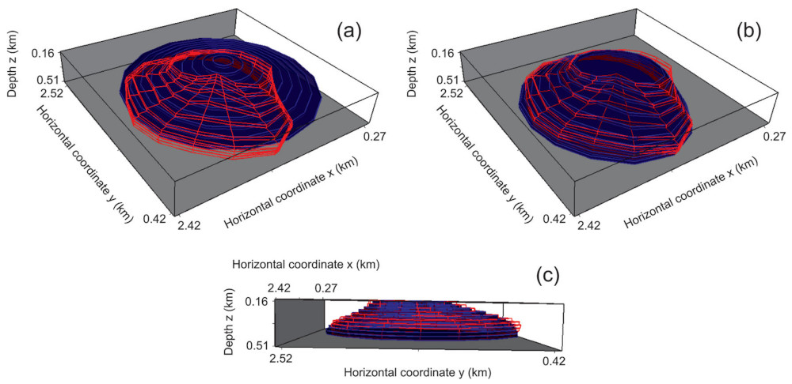

Oliveira Jr, V. C., and V. C. F. Barbosa (2013), 3-D radial gravity gradient inversion, Geophysical Journal International, 195(2), 883-902, doi:10.1093/gji/ggt307.
We have presented a joint inversion of all gravity-gradient tensor components to estimate the shape of an isolated 3-D geological body located in subsurface. The method assumes the knowledge about the depth to the top and density contrast of the source. The geological body is approximated by an interpretation model formed by an ensemble of vertically juxtaposed 3-D right prisms, each one with known thickness and density contrast. All prisms forming the interpretation model have a polygonal horizontal cross-section that approximates a depth slice of the body. Each polygon defining a horizontal cross-section has the same fixed number of vertices, which are equally spaced from 0° to 360° and have their horizontal locations described in polar coordinates referred to an arbitrary origin inside the polygon. Although the number of vertices forming each polygon is known, the horizontal coordinates of these vertices are unknown. To retrieve a set of juxtaposed depth slices of the body, and consequently, its shape, our method estimates the radii of all vertices and the horizontal Cartesian coordinates of all arbitrary origins defining the geometry of all polygons describing the horizontal cross-sections of the prisms forming the interpretation model. To obtain a stable estimate that fits the observed data, we impose constraints on the shape of the estimated body. These constraints are imposed through the well-known zeroth- and first-order Tikhonov regularizations allowing, for example, the estimate of vertical or dipping bodies. If the data do not have enough in-depth resolution, the proposed inverse method can obtain a set of stable estimates fitting the observed data with different maximum depths. To analyse the data resolution and deal with this possible ambiguity, we plot the ℓ2-norm of the residuals (s) against the estimated volume (vp) produced by a set of estimated sources having different maximum depths. If this s × vp curve (s as a function of vp) shows a well-defined minimum of s, the data have enough resolution to recover the shape of the body entirely. Conversely, if the observed data do not have enough resolution, some estimates with different maximum depths produce practically the same minimum value of s on the s × vp curve. In this case, the best estimate among a suite of estimates producing equally data fits is the one fitting the gravity-gradient data and producing the minima of both the source's bottom depth and volume. The histograms of the residuals can be used to quantify and remove systematic errors in the data. After removing these errors, we confirmed the ability of our method to recover the source geometry entirely (or its upper part only), if the data have sufficient (or insufficient) in-depth resolution. By inverting the gravity-gradient data from a survey over the Vinton salt dome (Louisiana, USA) with a density contrast of 0.55 g cm−3, we estimated a massive cap rock whose maximum depth attains 460 ± 10 m and its shallowest portion is elongated in the northeast–southwest direction.
 Perspective views of the simulated salt-dome cap rock (red wire-frame body) with depth to the bottom at 460 m and volume 0.366 km³. Perspective views in blue prisms of the (a) initial approximation, (b) and (c) estimated body. The estimated body in (b) and (c) is obtained by inverting noise-corrupted synthetic data.
@article{oliveirajr.2013a,
title = {3-D radial gravity gradient inversion},
volume = {195},
issn = {0956-540X, 1365-246X},
doi = {10.1093/gji/ggt307},
number = {2},
journal = {Geophysical Journal International},
author = {Oliveira Jr, V. C. and {Barbosa}, V. C. F.},
month = sep,
year = {2013},
pages = {883--902},
}